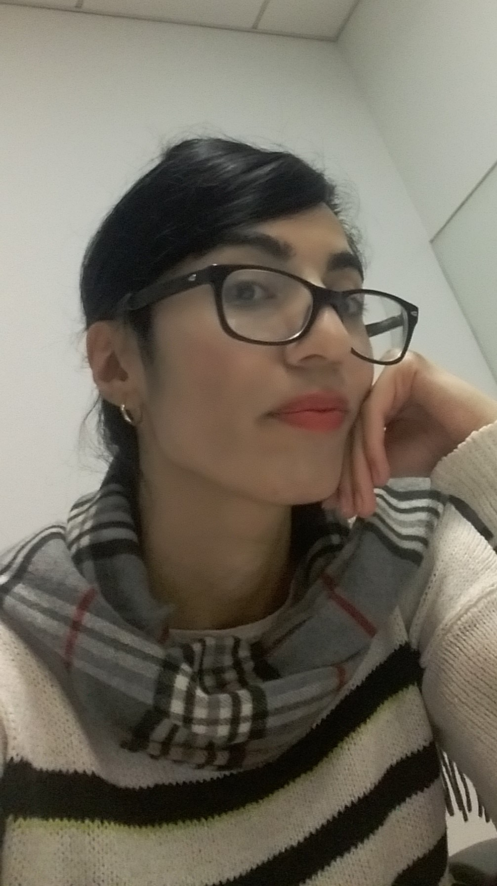

|  |
|
Maryam Khazaei
Ph.D. student
Electrical Engineering and Computer Science
School of Engineering
University of California, Merced
5200 N. Lake Road
Merced, CA 95343
Email: mkhazaeipool [at] ucmerced.edu
Social: [ LinkedIn]
|
Looking for a summer internships in Software Engineering, Algorithms, Robotics, Machine Learning and Optimization.
News
-
08/15/2018
: Maryam started her PhD in University of California, Merced.
-
10/15/2016
Maryam's talk on Fredholm Integral Equation, Student Lead Seminar, UC Denver
Research interests
My research focuses on Robotic, Algorithms and Optimization. In particular:
- Finding Max number of lanes in continuous envioronment for Multi Agents by using Max Flow Algorithm.
About
I am a 3rd year PhD student at University of California, Merced.
I started my PHD in Computer Engineering from Summer 2019 at UC Merced supervised by Professor Marcelo Kallmann.
I have received my MSc in Applied Mathematics from University of Colorado Denver, in June 2018.
Professional Activities / Organizations
- Sub Reviewer, 33rd International Conference on Computer Animation and Social Agents,
England [CASA,20].
- Graduate Student Association EECS representative, UC Merced, Fall 2020 – Present
- National Society of Professional Engineers (NSPE ) – Membership, Feb 2021
- Society of Women Engineers (SWE) - Membership, Feb 2021
- Member,Young Researchers Club, (www.bpj.ir), Fall 2010-2011
Employments
- Graduate Teaching Assistant | University of California, Merced | Aug, 2018 - Present
- Graduate Teaching Assistant | University of Colorado, Denver | Aug, 2016 - Aug, 2018
- Budget Analyst in Caspian Management Company (Arraycode), Iran, 2014-2015
- •Organized company finance by reports of finance regularly, Collaborated with executive members by regular meetings, Advised on budgetary, income and expenditure matters
Course & Projects
- Lane Systems of Max lows, Application: Controlling and Management of Traffic Flow, May 2020-Spring 2021, UC Merced
- Modeling a Hierarchical Object | Fall 2019 | Course Project (Computer Graphic)
Implement Modeling a Hierarchical Object includes 5 parts interconnected by joints produce movements in 3 dimensions with two types of global and joint motion.
tools - CPP, Open GL
- Animating a Hierarchical Object | Fall 2019 | Course Project (Computer Graphic)
Implement Modeling and Animating a Hierarchical Object with camera fly-through.
tools - CPP, Open GL
- Baseball Elimination | Fall 2019 | Course Project (Advance Algorithm)
Find which teams have a chance to win Baseball league using MaxFlow Mincut Algorithm
tools - CPP
- Min Spanning Tree (Kruskal, Prim’s algorithm, Dijkstra's Algorithm and Boruvka algorithm) | Spring 2018 | Course Project (Network Flow)
Applications: Reducing data storage in sequencing amino acids in a protein and Network design (communication, electrical, hydraulic, computer, road).
- Master Thesis: Numerical solution of two-dimensional coupled viscous Burgers equation using modified cubic B-spline differential quadrature method
Skills
- Technical: C++, Java, R, Python, Matlab, HTML and C (familiar), LATEX (XEPERTIEAN), Math Type, Open Graphics Library -Sig Library
Publications
- Published || Maryam Khazaei Pool, Jalil Rashidinia and Hassan Nikmarvani, "Spline collocation method for solution of higher order linear boundary value
problems” Accepted at the TWMS J. Pure Applied Math (TWMS J. Pure Appl. Math., V.6, N.1, 2015, pp.38-47)
- Submitted || Maryam Khazaei Pool,“The Spline Collocation Method for Solution of The Linear Seventh Order Boundary Value Problems "
Honors and awards
- Graduate Teaching Assistantship Scholarship University of California Merced, 2018-2023
- Graduate National Science Foundation (NSF) teaching Fellowship University of Colorado Denver, Fall 2016 -Fall 2017
- Outstanding Student Award, (Ranked 1st for 6 times), BSC IUST, Fall 2009- Fall 2011
Extracurricular/Hobbies
- Playing Football, Golf, Reading Novels and Mountain Climbing
Last updated: 10:31 pm PDT Sunday, September 13, 2020